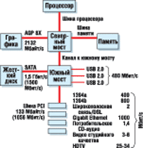
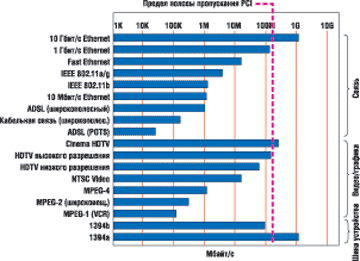
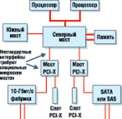
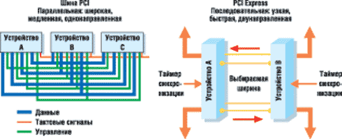
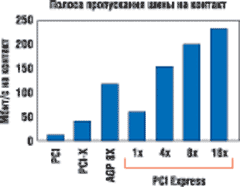
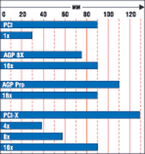

Алексей Борзенко,
к.т.н., доцент РРТА
Интерфейс PCI Express (известный прежде под названием 3GIO) основан на открытых стандартах и выступает как наследник PCI и его вариантов для систем ввода-вывода серверов и клиентских устройств. В отличие от PCI и PCI-X, основанных на 32- и 64-разрядной параллельной шине, PCI Express использует высокоскоростную технологию последовательного соединения, похожую на ту, что используется в Gigabit Ethernet, Serial ATA (SATA) и Serial Attached SCSI (SAS). PCI Express отражает общую для компьютерной индустрии тенденцию замены устаревших параллельных общих шин на высокоскоростные последовательные соединения типа "точка-точка" (point-to-point).
Новая технология шины обеспечивает скорость передачи, которая будет достаточной с учетом развития процессоров и подсистем ввода-вывода, по крайней мере, в течение следующих 10 лет.
По сравнению с PCI технология PCI Express имеет следующие преимущества:
- высокая пропускная способность - в первой версии теоретическая пиковая пропускная способность составит 5-80 Гбит/с, в зависимости от реализации;
- последовательное соединение, обеспечивающее масштабирование производительности;
- отдельное соединение "точка-точка" для каждого устройства вместо общей шины PCI;
- малые задержки для серверной архитектуры;
- меньший размер разъемов и упрощенное проектирование систем;
- расширенные функции.
В течение следующего десятилетия интерфейс PCI Express постепенно заменит параллельные шины PCI, PCI-X и AGP. Сначала он вытеснит шины, которые требуют дополнительной производительности и функций. Например, первоначально PCI Express будет применяться как замена шины передачи графических данных AGP 8X в клиентских системах, обеспечивая высокую полосу пропускания и поддержку мультимедийного трафика. Он будет сосуществовать с шиной PCI-X и постепенно вытеснять ее в серверных системах.
Шина PCI
Шина PCI, появившаяся в 1992 г., стала основой системы ввода-вывода практически для всех компьютерных платформ. Первоначальная 33-МГц, 32-разрядная реализация обеспечивала теоретически возможную пиковую производительность 133 Мбайт/с. В последующие годы архитектура платформы развивалась, различные функции перекладывались на варианты PCI с более высокой пропускной способностью (табл. 1), включая AGP и PCI-X.
Таблица 1. Пропускная способность шин PCI, PCI-X и AGP
| Шина и частота | Пиковая пропускная способность, Мбайт/с | |
| в 32-разрядном режиме | в 64-разрядном режиме | |
| PCI 33 МГц | 133 | 266 |
| PCI 66 МГц | 266 | 532 |
| PCI-X 100 МГц | Не поддерживает | 800 |
| PCI-X 133 МГц | Не поддерживает | 1 Гбайт/с |
| AGP 8X | 2,1 Гбайт/с | Не поддерживает |
Если внимательно изучить применяемую в PCI технологию передачи сигналов, станет ясно, что увеличить производительность этой многоточечной параллельной шины уже невозможно. Дело в том, что для шины PCI трудно реализовать наращивание частоты или уменьшение напряжения. Кроме того, она не поддерживает такие функции, как расширенное управление энергопотреблением, замена и подключение в горячем режиме периферийных устройств и функции качества сервиса - QoS (а проще говоря, доступности) для гарантированной полосы пропускания операций в реальном времени. Наконец, вся имеющаяся полоса пропускания шины PCI не поддерживает одновременную передачу данных в обоих направлениях. Многие сети передачи данных обеспечивают параллельный трафик, благодаря чему задержка при передаче сообщений сводится к минимуму.
Клиентские системы
Первый вариант шины PCI был разработан для поддержки 2D-графики, высокопроизводительных жестких дисков и локальных сетей. Вскоре после появления PCI выросшие требования к пропускной способности графической подсистемы 3D превысили возможности 32-разрядной шины PCI с частотой 33 МГц. Чтобы решить эту проблему, корпорация Intel (http://www.intel.com) вместе с несколькими производителями графических плат разработали спецификацию AGP, описывающую выделенную высокоскоростную шину для работы с графикой. Шина AGP освободила систему PCI от передачи графики, что позволило задействовать ее пропускную способность для других операций передачи данных и ввода-вывода. Кроме того, впоследствии Intel добавила выделенные каналы USB 2.0 и Serial ATA к южному мосту своих наборов микросхем (НМС), что дополнительно уменьшило нагрузку ввода-вывода на шину PCI. На рис. 1 показана внутренняя архитектура типичной клиентской системы ПК и пропускная способность шины ввода-вывода и графики.
|  | Рис. 1. Архитектура типичной клиентской системы.
|
Узкие места клиентских систем
Есть несколько шин клиентской системы, способных ограничивать производительность из-за постоянного совершенствования центрального процессора, памяти и устройств ввода-вывода: шина PCI, шина AGP и канал между северным и южным мостами.
PCI Bus. Шина PCI обеспечивает скорость передачи до 133 Мбайт/с для подключенных устройств ввода-вывода. Ряд устройств ввода-вывода способны загрузить значительную часть этой полосы пропускания, так что если подключить несколько таких устройств, то общая шина PCI не сможет справиться с трафиком.
На рис. 2 показаны требования к полосе пропускания разных сетевых протоколов, видеоприложений и внешних устройств, которые обслуживает шина PCI. Как видно, многоточечная общая шина PCI с трудом способна работать с современными устройствами. Проблема обостряется с появлением новых периферийных устройств, использующих еще более высокую скорость передачи.
|  | Рис. 2. Полоса пропускания протоколов и устройств, обслуживаемых шиной PCI.
|
Например, для Gigabit Ethernet нужна полоса пропускания 125 Мбайт/с, иными словами, этот сетевой протокол фактически полностью загружает шину PCI 133 Мбайт/с. У IEEE 1394b максимальная полоса пропускания составляет 100 Мбайт/с, и он также полностью загружает стандартную PCI-шину.
AGP. В последнее десятилетие требования к производительности видео удваивались каждые два года. За этот период шина передачи графики перешла от PCI к AGP, затем от AGP к AGP 2X, AGP 4X и, наконец, к сегодняшней AGP 8X.
AGP 8X работает на скорости 2,134 Гбайт/с. Несмотря на такую полосу пропускания, постепенный рост требований к производительности шины AGP создает значительные проблемы при проектировании плат и повышает стоимость соединений. Как и в случае шины PCI, расширение возможностей шины AGP становится все сложнее и дороже по мере роста частот.
Канал между северным и южным мостами. Нагрузка на шину PCI влияет и на связь между северным и южным мостами, особенно при использовании дисков SATA и устройств USB. В будущем здесь потребуется канал с большей полосой пропускания.
Серверные системы
В серверах первоначальная 32-разрядная, 33-МГц шина PCI была расширена до 64-разрядной 66-МГц с пропускной способностью 532 Мбайт/с. Частота 64-разрядной шины была увеличена до 100 и до 133 МГц - этот вариант называется PCI-X. Такая шина соединяет НМС серверной системы (или двухпроцессорной рабочей станции класса high-end) со слотами расширения, контроллерами Gigabit Ethernet и Ultra320 SCSI, интегрированными на системной плате. 64-разрядная шина PCI-X с частотой 133 МГц обеспечивает пиковую полосу пропускания 1 Гбайт/с между НМС системы и устройством ввода-вывода. Сейчас этого достаточно для большинства операций ввода-вывода, включая протоколы Gigabit Ethernet, Ultra320 SCSI и Fibre Channel 2 Гбит/с. Однако PCI-X, как и PCI, - это общая шина с присущими ей недостатками.
Группа PCI Special Interest Group (PCI SIG, http://www.psisig.com) разработала спецификацию PCI-X 2.0, описывающую 64-разрядную, 266-МГц шину PCI-X, у которой скорость передачи вдвое больше, чем у 133-МГц PCI-X. Тем не менее при использовании расширенного варианта параллельной шины PCI-X возникают серьезные проблемы с проектированием. Разъемы для нее громоздкие и дорогие, а строгие требования к проектированию значительно повышают стоимость системных плат по мере роста частот. Кроме того, на высоких частотах допускается подключение к шине PCI-X 2.0 только одного устройства ввода-вывода в конфигурации "точка-точка".
Узкие места серверных систем
На рис. 3 показаны внутренние системные межсоединения в типичной двухпроцессорной серверной системе. В этой архитектуре расширение полосы пропускания обеспечивается с помощью фирменного интерфейса между микросхемами северного моста и моста PCI-X. Несколько шин PCI-X подключаются к высокоскоростным слотам расширения, 10-Гбит Ethernet и дискам SAS/SATA. Но эта архитектура имеет несколько недостатков. Специальные кристаллы мостов PCI-X соединяют несколько параллельных шин PCI-X со специальным последовательным межсоединением НМС. Такой подход связан с высокими затратами, неэффективен и приводит к задержке передачи между устройствами ввода-вывода и северным мостом. Например, этот подход предусматривает соединение последовательной фабрики 10 Гбит/с с 64-разрядной параллельной шиной, которая, в свою очередь, подключается через фирменный кристалл моста PCI-X к последовательному межсоединению в северном мосте.
|  | Рис. 3. Современная двухпроцессорная архитектура процессора.
|
Кроме того, технология внешнего ввода-вывода в серверах нового поколения требует намного более широкой полосы пропускания, чем способна обеспечить 133-МГц шина PCI-X. Эти технологии включают такие фабрики, как 10-Гбит Ethernet, Fibre Channel 10 Гбит/с и 4x Infiniband, а также будущие высокоскоростные интерфейсы жестких дисков - SATA и SAS 3 Гбит/с. В случае фабрики 10 Гбит/с каждый порт с пропускной способностью 10 Гбит/с может передавать данные в обоих направлениях с пиковой скоростью 2 Гбайт/с, а 133-МГц шина PCI-X обеспечивает максимальную скорость 1 Гбайт/с в одном направлении в один момент времени. Это означает, что 133-МГц шина PCI-X способна обработать пиковую пропускную способность таких фабрик не более чем на 50%.
Хотя PCI-X 2.0 с частотой 266 МГц удвоит ширину пиковой полосы пропускания PCI-X - до 2 Гбайт/с, ее все же будет недостаточно для суммарных 4 Гбайт/с, которые нужны двухпортовому контроллеру фабрики 10 Гбит/с. Ясно, что клиентским системам и серверам требуется замена параллельной шины PCI и ее вариантов.
PCI Express
PCI Express предоставляет масштабируемую высокоскоростную последовательную шину ввода-вывода. Многоуровневая архитектура PCI Express поддерживает существующие приложения PCI и драйверы за счет обратной совместимости с существующей моделью PCI. В частности, архитектура PCI Express определяет высокопроизводительную масштабируемую последовательную шину "точка-точка". Канал PCI Express состоит из двух однонаправленных каналов, каждый из которых реализован как пара передачи и пара приема для одновременной передачи в обоих направлениях. Каждая пара состоит из двух низковольтных пар дифференциальных сигналов. Таймер синхронизации встроен в каждую пару и использует схему кодировки для синхронизации 8b/10b, позволяя достичь высокой скорости передачи данных. На рис. 4 представлены каналы PCI в сравнении с PCI Express.
|  |
| Рис. 4. PCI в сравнении с PCI Express.
|
Многоуровневая архитектура PCI ExpressУровень Конфигурация/ОС определяет стандартный механизм (в соответствии со спецификацией PCI Plug-and-Play) инициализации устройств, их нумерацию и конфигурирование. Этот уровень общается с уровнем ПО, инициирующего передачу данных между периферийными устройствами или получение данных от подключенной периферии. Интерфейс PCI Express разрабатывался как совместимый с существующими ОС, но для поддержки мощных функций технологии потребуются ОС будущего времени. Уровень Программное обеспечение генерирует запросы чтения и записи к периферийным устройствам. PCI Express обеспечивает инициализацию и совместимость с ПО PCI. Как и в PCI, модель инициализации PCI Express позволяет ОС обнаруживать новые аппаратные устройства и распределять ресурсы системы. PCI Express сохраняет пространство конфигурирования PCI и программирование устройств ввода-вывода, и все ОС будут загружаться, не требуя модификации, в системах с использованием PCI Express. Сохраняется и модель выполнения ПО PCI, что позволяет запускать существующее ПО без всякой модификации. Уровень Транзакций читает и записывает запросы от уровня ПО к канальному уровню с помощью протокола на основе пакетов и обеспечивает соответствие ответных пакетов запросам ПО. Этот уровень поддерживает 32-разрядную и расширенную 64-разрядную адресацию памяти, адресное пространство PCI памяти, ввода-вывода и конфигурации, а также новое пространство сообщений для таких сообщений, как прерывания и сбросы. Канальный уровень добавляет последовательность пакетов и обнаружение ошибок на основе циклических кодов избыточности (CRC) к пакетам данных, создавая надежный механизм передачи данных между системным НМС и контроллером ввода-вывода. Физический уровень базируется на двойных однонаправленных каналах PCI Express. Это обеспечивает гибкость и позволяет использовать разные технологии и частоты. Благодаря такому подходу первоначальную кремниевую технологию можно будет со временем заменить инновациями, которые сохранят обратную совместимость. Например, для повышения скорости передачи данных можно использовать оптоволоконную технологию. Механический уровень определяет форм-факторы периферийных устройств.
|
Ширину пропускания канала PCI Express можно масштабировать за счет добавления сигнальных пар для формирования нескольких линий между двумя устройствами. Спецификация поддерживает ширину линии x1, x4, x8 и x16 и соответственно расщепляет байты данных по линиям. После того, как два агента на обоих концах канала PCI Express договорятся о ширине линии и частоте передачи, байты данных передаются расщепленными по линиям с кодировкой.
Базовый канал x1 имеет пиковую "сырую" полосу пропускания на уровне 2,5 Гбит/с. Поскольку шина работает в двух направлениях (данные могут одновременно передаваться в обоих направлениях), эффективная "сырая" скорость передачи равна 5 Гбит/с. В табл. 2 приведены скорости передачи данных с кодированием и без кодирования при реализации линий x1, x4, x8 и x16, которые определены в первой версии PCI Express.
Таблица 2. Полоса пропускания PCI Express
| Реализация PCI Express | Скорость передачи, Гбит/с | |
| с кодировкой | без кодировки | |
| x1 | 5 | 4 (500 Мбайт/с) |
| x4 | 20 | 16 (2 Гбайт/с) |
| x8 | 40 | 32 (4 Гбайт/с) |
| x16 | 80 | 64 (8 Гбайт/с) |
В будущих реализациях PCI Express частота передачи данных по каналу еще больше увеличится. Например, после появления второго поколения PCI Express частота передачи вырастет не менее чем вдвое. Благодаря архитектуре "точка-точка" вся полоса пропускания каждой шины PCI Express выделяется устройству на конце канала. Несколько устройств PCI могут работать одновременно, не мешая друг другу.
PCI Express, в отличие от PCI, имеет минимальные сигналы боковой полосы, а временные метки и информация об адресе встроены в данные. Именно поэтому данная технология обеспечивает высокую полосу пропускания на один контакт разъема ввода-вывода по сравнению с PCI (рис. 5). В результате соединители становятся более эффективными, компактными и дешевыми.
|  | Рис. 5. Сравнение полосы пропускания для PCI, PCI-X, AGP и PCI Express.
|
Технология PCI Express надежно обеспечивает более высокие скорости передачи данных за счет низковольтных дифференциальных сигналов. При таком подходе сигнал идет от источника к получателю по двум линиям: по одной посылается "позитивный" образ, по другой - "негативный", или "перевернутый" образ сигнала. Из-за строгих правил маршрутизации шум, влияющий на одну линию, влияет и на другую. Приемник получает оба сигнала, инвертирует негативную версию обратно в позитивную и суммирует два собранных сигнала, в результате шумы эффективно удаляются.
В первоначальной спецификации PCI Express определены графические платы мощностью до 75 Вт. Сейчас разрабатывается новая спецификация графики PCI Express для карт мощностью до 150 Вт. Эти характеристики соответствуют требованиям графических адаптеров, для которых сейчас предел мощности составляет 41 Вт для массовых карт AGP и 110 Вт для карт AGP Pro 110.
Полоса пропускания PCI ExpressПолоса пропускания PCI Express обычно обозначается как "кодированная" полоса пропускания. PCI Express использует кодировку 8b/10b, которая транслирует 8-разрядные данные в 10-битную последовательность передаваемых символов. Этот подход улучшает физический сигнал, что облегчает синхронизацию битов, упрощает проектирование приемников и передатчиков, совершенствует обнаружение ошибок и позволяет отличить управляющие символы от символов данных. Ширина "кодированной" полосы пропускания базовой линии x1 PCI Express равна 5 Гбит/с. Однако более точную цифру дает полоса пропускания "без кодировки", ширина которой составляет 80% "кодированной", т. е. 4 Гбит/с. В табл. 2 приведена полоса пропускания PCI Express с кодировкой и без нее.
|
Расширенные функции PCI Express
В PCI Express предусмотрены расширенные функции, которые будут постепенно реализовываться по мере их поддержки ОС и устройствами, а также по мере их использования приложениями. В список этих функций входят:
- расширенное управление энергопотреблением;
- поддержка трафика данных в реальном времени;
- горячая замена;
- целостность данных и обработка ошибок.
Расширенное управление энергопотреблением
Управление в PCI Express позволяет уменьшить энергопотребление, если шина не активна (т. е. данные не пересылаются между компонентами и периферийными устройствами). Интерфейс PCI Express должен быть активным все время, чтобы передатчик и получатель работали синхронно. Для этого, если нет данных для передачи, непрерывно посылаются пустые символы, получатель декодирует их и отбрасывает. Этот процесс потребляет дополнительную энергию, что, в частности, уменьшает время работы от батарей ноутбуков и карманных компьютеров.
Для решения этой проблемы спецификация PCI Express определяет два состояния канала с низким энергопотреблением и протокол Active-State Power Management (ASPM). Когда канал PCI Express не используется, он может перейти в одно из двух состояний с низким энергопотреблением. Эти состояния экономят энергию, но требуют времени на восстановление для ресинхронизации передатчика и получателя, когда нужно передать данные. Чем дольше время восстановления (или запаздывания), тем ниже энергопотребление.
Поддержка трафика реального времени
PCI Express, в отличие от PCI, поддерживает изохронную (или зависимую от времени) передачу данных и разные уровни QoS. Эти функции реализованы с помощью "виртуальных каналов", которые гарантируют, что конкретные пакеты данных прибудут по своему конечному адресу в определенный момент времени. PCI Express поддерживает несколько изохронных виртуальных каналов (каждый с независимым сеансом связи) на одну линию. Все эти каналы могут иметь разную доступность. Данное законченное решение предназначено для приложений, требующих доставки данных в реальном времени (такова, например, работа с аудио и видео в реальном времени).
Горячая замена
Системы на базе PCI не имеют встроенной поддержки горячей замены плат ввода-вывода. Уже после выпуска стандарта PCI как дополнение к нему была разработана функция горячей замены серверных карт и PC Card с ограниченными возможностями. Эти решения рассчитаны на растущие требования серверов и портативных компьютеров. Во-первых, часто трудно или невозможно запланировать отключение сервера для замены или установки периферийных карт. Возможность горячей замены устройств ввода-вывода сводит к минимуму простои. Во-вторых, пользователям ноутбуков нужно заменять в горячем режиме карты, обеспечивающие такие функции ввода-вывода, как мобильный диск и работа в сети.
В PCI Express реализована оригинальная поддержка для горячей замены периферии ввода-вывода. Единая программная модель может использоваться для всех форм-факторов PCI Express.
Целостность данных и обработка ошибок
Интерфейс PCI Express поддерживает целостность данных на уровне каналов для всех типов пакетов транзакций и каналов данных. Благодаря этому обеспечивается целостность данных при их передаче для приложений высокой доступности, особенно для выполняющихся на серверных системах. PCI Express также поддерживает обработку ошибок PCI и использует усовершенствованный механизм оповещения об ошибках и их обработки, что расширяет возможности решений для изоляции сбоев и восстановления работоспособности.
Форм-факторы PCI Express
Разработаны различные форм-факторы PCI Express, предназначенные для клиентских систем, серверов и портативных компьютеров. В их числе стандартные и низкопрофильные карты - для настольных ПК, рабочих станций и серверов, Mini Card - для портативных компьютеров, ExpressCard - для портативных и настольных ПК, а также модули Server I/O Module (SIOM).
Стандартные и низкопрофильные карты
Выпускаемые сейчас стандартные и низкопрофильные карты PCI используются на различных платформах, включая серверы, рабочие станции и настольные ПК. PCI Express также определяет стандартные и низкопрофильные карты, которые могут заменить устаревшие карты PCI и сосуществовать с ними. Эти карты имеют те же размеры, что и карты PCI, и оборудованы задними скобами для внешних кабельных соединений.
Карты PCI и PCI Express отличаются соединителями ввода-вывода - разъем x1 PCI Express имеет 36 контактов, а у стандартного соединителя PCI их 120.
Коннектор x1 PCI Express намного меньше, чем у карты PCI Card. Рядом с разъемом PCI Express расположена маленькая заглушка, которая не позволяет вставить его в слот PCI. Стандартные и низкопрофильные форм-факторы также поддерживают реализации x4, x8 и x16. На рис. 6 показаны размеры соединителей PCI в сравнении с разъемами PCI, AGP 8X и PCI-X, которые они заменят на системной плате.
|  | Рис. 6. Размеры соединителей PCI Express.
|
В табл. 3 приведены требования к совместимости для стандартных и низкопрофильных карт PCI Express. Карта x1 может использоваться во всех четырех слотах системной платы: x1, x4, x8 и x16. Когда карта x1 вставляется в слот с более высокой скоростью, канальный уровень снижает скорость канала до x1.
Таблица 3. Совместимость карт PCI Express Card
| Реализация PCI Express | Слот x1 | Слот x4 | Слот x8 | Слот x16 |
| Карта x1 | Нужна | Нужна | Нужна | Нужна |
| Карта x4 | Нет | Нужна | Допускается | Допускается |
| Карта x8 | Нет | Допускается* | Нужна | Допускается |
| Карта x16 | Нет | Нет | Нет | Нужна |
| *Эта реализация будет иметь коннектор x8 на слоте x4, т. е.
в такой слот можно вставлять карты x8, которые, однако, будут работать на скорости x4. |
||||
Переход на карты PCI Express
Платы клиентских систем будут постепенно переходить от соединителей PCI к соединителям x1 PCI Express. Рабочие станции соответственно будут переходить от PCI на разъемы x1 PCI Express и от PCI-X - к x4 PCI Express. Соединитель AGP 8X будет заменяться разъемом x16 PCI Express. В отличие от AGP, он может использоваться для других карт PCI Express, если не требуется графическая карта PCI Express.
Серверы будут постепенно переходить от соединителей PCI-X в основном на x4 и x8. Использование в серверных системах комбинации слотов PCI Express и PCI/PCI-X позволит покупателям адаптироваться к новой технологии при сохранении поддержки унаследованных систем.
Рассмотрим пример типичной современной клиентской системы и переходной системной платы PCI Express. Системная плата PCI содержит пять стандартных слотов PCI и один слот AGP. Системная плата PCI Express также имеет шесть слотов ввода-вывода, но только три из них - слоты PCI, а еще два - это соединители x1 PCI Express и один - разъем x16 PCI Express, заменяющий слот AGP 8X. Соединители PCI Express на системной плате иногда делают черными, чтобы отличить их от белых слотов PCI и коричневых AGP.
Конечно, первыми устройствами, которые перейдут на карты PCI Express, станут платы с повышенными требованиями к полосе пропускания. В клиентских системах это графические адаптеры, адаптеры стандарта IEEE 1394, Gigabit Ethernet и ТВ-тюнеры, а в серверных системах - карты Ultra320 SCSI RAID, HBA-адаптеры Fibre Channel и карты Gigabit Ethernet и 10 Gigabit Ethernet. Ожидается, что стоимость этих плат будет сравнима с ценой аналогичных PCI-X, а в некоторых случаях даже меньше. Другие карты также постепенно перейдут на PCI Express, но может потребоваться несколько лет, прежде чем недорогие карты, работающие с низкой пропускной способностью (например, модемы), начнут использовать эту технологию. Таким образом, как это было и с переходом от ISA к шине PCI, еще долгие годы PCI и PCI Express будут сосуществовать.
PCI Express Mini Card
PCI Express Mini Card заменят Mini PCI, представляющие собой маленькую внутреннюю плату, по своей функциональности аналогичную картам PCI для настольных ПК. Карты Mini PCI используются в основном для реализации сетевых функций в портативных компьютерах, выпускаемых серийно или на заказ. По размерам PCI Express Mini Card вдвое меньше Mini PCI, что позволяет проектировщикам ноутбуков предусмотреть место для одной или двух карт в зависимости от размера компьютера.
PCI Express Mini Card может использовать PCI Express и/или USB 2.0. Разъем PCI Express Mini Card на системной плате должен поддерживать как канал x1 PCI Express, так и USB 2.0. Поддержка USB 2.0 облегчит переход на PCI Express, потому что производителям периферии нужно определенное время для реализации поддержки PCI Express в своих наборах микросхем. В переходный период PCI Express Mini Card можно будет легко подключать с помощью USB 2.0.
ExpressCard
ExpressCard - это маленькая модульная дополнительная карта, которая в течение следующих лет должна заменить PC Card. Спецификация ExpressCard была разработана ассоциацией Personal Computer Memory Card International Association (PCMCIA, http://www.pcmcia.org). Форм-фактор ExpressCard обеспечивает замену PC Card с меньшими размерами и стоимостью и более высокой производительностью. Как и PCI Express Mini Card, модуль ExpressCard поддерживает каналы x1 PCI Express и USB 2.0. Низкая цена делает его оптимальным для настольных систем с уменьшенным форм-фактором. Модуль ExpressCard также имеет пониженное энергопотребление, и его можно вставлять в горячем режиме. Скорее всего, ExpressCard будут использоваться в сетевых платах, жестких дисках и будущих технологиях ввода-вывода.
PCI Express Server I/O Module
Массовое появление модулей SIOM ожидается после выхода второго поколения PCI Express. PCI Express SIOM обеспечивает форм-фактор, который легко установить и заменить. Он будет модульным, что позволит устанавливать и обслуживать карты ввода-вывода без прерывания работы системы и не открывая корпус компьютера.
SIOM предусматривает более радикальное изменение форм-фактора, чем другие варианты PCI Express. Он решит многие проблемы с серверными картами PCI и PCI-X. Конструкция SIOM делает карты более надежными, что особенно важно в центрах обработки данных. Модуль также разрабатывался с расчетом на принудительную вентиляцию, поскольку мощным серверам свойственно высокое тепловыделение. Потоки охлаждающего воздуха могут идти сзади, сверху или снизу модуля. Такая гибкость дает проектировщикам систем больше свободы при оценке вариантов охлаждения стоечных систем, оборудованных SIOM.
Модули SIOM с самым большим форм-фактором способны выполнять сравнительно сложные функции и использовать весь диапазон каналов PCI Express.
Примеры систем с PCI Express
Рассмотрим, как технология PCI Express может быть реализована в клиентской и серверной системах. Первоначально канал x16 PCI Express заменит шину AGP между графической подсистемой и северным мостом. Вариант PCI Express может заменить и канал между обоими мостами НМС. Предусмотрено также несколько каналов PCI Express от южного моста к контроллеру сетевого интерфейса (NIC), устройствам IEEE 1394 и другой периферии. Южный мост будет по-прежнему поддерживать устаревшие слоты PCI.
Такая архитектура дает покупателям несколько важных преимуществ. Настольные системы еще долго будут оснащаться шинами как PCI, так и PCI Express. Первые поколения серверов PCI Express также будут иметь слоты PCI-X для устаревших карт PCI-X. Чтобы упростить переход, предусмотрена защита от ошибочной установки PCI в слоты PCI Express и карт PCI Express - в слоты PCI. Кроме того, PCI Express обеспечивает широкое применение карт Gigabit Ethernet, 10 Gigabit Ethernet, 1394b и других высокоскоростных устройств в клиентских системах. Он также поддерживает растущие требования к полосе пропускания графических подсистем.
PCI Express может применяться в двухпроцессорной серверной архитектуре, значительно упрощая систему. Каналы PCI Express для устройств ввода-вывода и слотов подключаются непосредственно к северному мосту. Такой подход дает ряд преимуществ. Во-первых, это высокая полоса пропускания для ввода-вывода следующего поколения, например, 10 Gigabit Ethernet и фабрики x4 Infiniband. Например, канал x8 PCI Express способен обеспечить пиковую полосу пропускания, которая требуется двухпортовому контроллеру 10 Гбит/с.
Во-вторых, меньше становятся расходы на внедрение. Удается подключить к системному набору микросхем больше слотов и встроенных устройств ввода-вывода, что уменьшает число микросхем моста и снижает требования к маршрутизации сигналов на системной плате. И наконец, за счет отказа от использования микросхемы моста PCI-X уменьшается запаздывание передачи между устройствами ввода-вывода и центральным процессором и памятью.
Таким образом, технология PCI Express обеспечивает надежное и масштабируемое последовательное соединение, обратно совместимое с PCI. Как и PCI, она будет использоваться в широком спектре существующих платформ, включая серверы, портативные компьютеры, настольные системы и рабочие станции. Она также позволит реализовать новаторскую конструкцию модульных компьютерных систем.